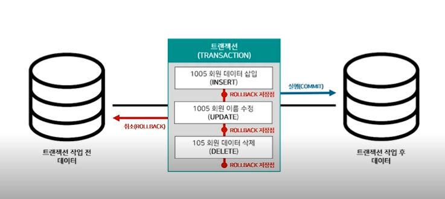
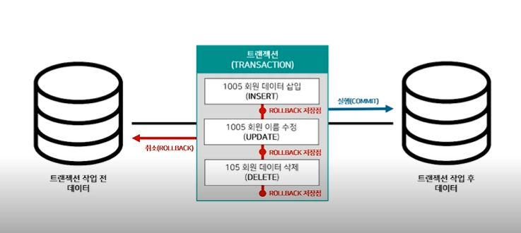

1강. SQL 기본 구조
관계형 데이터 베이스
SQL 및 데이터 베이스
Structured Query Language - 관계형 데이터 베이스가 이해할 수 있는 구조화된 질의어
웹 or 모바일 데이터 -> 관계형 데이터 베이스 -> 각자 직무에 필요한 데이터 추출해 보고서 작성
RDB - 관계형 데이터 베이스
행과 열로 구성된 테이블이 다른 테이블과 관계를 맺고 모여 있는 집합체 -> 관계형 데이터 베이스 저장
관계형 테이블
관계형 테이블 - 관계형 데이터 베이스에 저장되는 데이터 집합
1:1 1:N N:N
ex)
회원테이블에 회원 번호 중복 X / 회원테이블에 주문 테이블은 중복 O
여기서 회원 및 주문 테이블이 회원번호 기준으로 1: N 관계
-> 즉 회원들이 여러개의 주문이 가능하다.
MySQL 및 Workbench
MYSQL server
오픈 소스 관계형 데이터 베이스
Workbench - 관리 소프트웨어
Workbench
구성
데이터 베이스 관리
SQL 명령
실행 결과 출력
 왼 -> 전체 실행
오 -> 커서 라인 실행
/*데이터 베이스 생성*/
CREATE DATABASE TEST;
/*해당 데이터베이스 사용*/
USE TEST;
/*데이터 베이스 삭제*/
DROP DATABASE TEST;
MongoDB
MongoDB는 관계형 데이터베이스가 아니다.
NoSQL 데이터 베이스의 한 종류 -> Document DATABASE
기존 데이터베이스의 문제점에서 출발했듯이 관계형 데이터베이스도 한계점이 노출되어 NoSQL 탄생.
NoSQL -> 탈 RDBMS
왼 -> 전체 실행
오 -> 커서 라인 실행
/*데이터 베이스 생성*/
CREATE DATABASE TEST;
/*해당 데이터베이스 사용*/
USE TEST;
/*데이터 베이스 삭제*/
DROP DATABASE TEST;
MongoDB
MongoDB는 관계형 데이터베이스가 아니다.
NoSQL 데이터 베이스의 한 종류 -> Document DATABASE
기존 데이터베이스의 문제점에서 출발했듯이 관계형 데이터베이스도 한계점이 노출되어 NoSQL 탄생.
NoSQL -> 탈 RDBMS
 키-값 : 키와 값으로 구성된 배열 구조의 데이터 베이스 NoSQL
도큐먼트 : 필드와 값으로 구성된 JSON format으로 관리
칼럼 패밀리 : 칼럼과 로우로 구성된 데이터 베이스
그래프 : 노드와 관계로 구성된 데이터 베이스
주로 정형 및 비정형 데이터나 초당 동시처리가 중요한 업무
로그 및 이력 등의 단순 기록형 업무에 사용된다.
성능은 클러스터 크기, 네트워크 및 어플리케이셔에 의해 성능 결정
키-값 : 키와 값으로 구성된 배열 구조의 데이터 베이스 NoSQL
도큐먼트 : 필드와 값으로 구성된 JSON format으로 관리
칼럼 패밀리 : 칼럼과 로우로 구성된 데이터 베이스
그래프 : 노드와 관계로 구성된 데이터 베이스
주로 정형 및 비정형 데이터나 초당 동시처리가 중요한 업무
로그 및 이력 등의 단순 기록형 업무에 사용된다.
성능은 클러스터 크기, 네트워크 및 어플리케이셔에 의해 성능 결정
2강. SQL 명령어
SQL 기본 명령어
분류
4가지
DDL: 데이터 정의어 - 테이블 생성 변경 삭제
DML: 데이터 조작어 - 데이터 삽입 조회 수정 삭제
DCL: 데이터 제어어 - 데이터 접근권한 부여, 제거
TCL: 트렌젝션 제어어 - DML 명령어 실행, 취소, 임시저장
DBA(데이터 베이스 관리자) -> 데이터 정의어 데이터 제어어 사용
Data Anayst -> 데이터 조작어, 트랜젝션 제어어
데이터 정의어 DDL
테이블 생성 변경
Requirement
- 각 열은 반드시 한가지 데이터 타입으로 정의되어야 함
- 숫자형 비트 정수 소수
- 고정길이 문자형 가변길이 문자형
- 년월 시분초
테이블
테이블 각 열마다 제약 조건을 정의할 수 있음
종류
- PK 중복되어 나타낼 수 없는 단일 값
- NOT NULL
예시
CREATE DATABASE Practice;
USE Practice;
CREATE TABLE customer(
userNum INT PRIMARY KEY,
userName VARCHAR(20),
Enter DATE NOT NULL,
agree BIT
);
SELECT * FROM customer;
ALTER TABLE customer ADD gender VARCHAR(2); /* 열 추가*/
ALTER TABLE customer MODIFY gender VARCHAR(20);
ALTER TABLE customer CHANGE gender sex VARCHAR(2);
ALTER TABLE customer RENAME userInfo;
SELECT * FROM userInfo;
DROP TABLE userInfo;
데이터 조작어 DML
Requirement
데이터 삽입 조회 수정 삭제
primary key 제약 조건을 위반
not null의 제약조건 위반
table type 조건을 위반하는 경우
-> 실행 되지 않음
예제
INSERT INTO customer VALUE(1001, 'A', '2023-02-14', 1,'w');
SELECT * FROM customer;
SELECT userNum,gender FROM customer;
SELECT 'w' as gender FROM customer;
/*일부를 변경하게 되었을 경우에는 edit preference에서 other check 풀기*/
UPDATE customer SET agree = 0;
UPDATE customer SET agree =1 WHERE userName = 'A';
DELETE FROM customer where userName = 'A';
DELETE FROM customer;
데이터 제어어 DCL
뎅이터 접근 구너한 부여 및 제거를 사용할 때 하는 명령
예제 - 주로 DBA가 사용
/*My sql 데이터 베이스 사용*/
USE MYSQL;
/*사용자 확인*/
SELECT * FROM USER;
/*사용자 아이디 및 비밀번호 생성*/
CREATE USER 'TEST'@LOCALHOST IDENTIFIED BY 'TEST';
/*사용자 확인*/
SELECT * FROM USER;
SET PASSWORD FOR 'TEST'@LOCALHOST = '1234';
GRANT SELECT, DELETE ON practice.customer TO 'TEST'@LOCALHOST;
/*권한 제거*/
REVOKE DELETE ON practice.customer FROM 'TEST'@LOCALHOST;
/*모든 권한 제거*/
GRANT ALL ON practice.customer TO 'TEST'@LOCALHOST;
DROP USER 'TEST'@LOCALHOST;
SELECT * FROM USER;
/*권한 부여 및 제거*/
트랜젝션 제어어 TCL
명령어 실행 취소 임시 저장
트랜젝션
트랜젝션 분할 할 수 없는 최소 단위
 실행 취소 실행이 모두 중요
실행이라는 것은
트랜젝션 시작 -> 데이터 삽입 -> 실행
취소는
트랜젝션 시작 -> 데이터 삽입 -> 삭제
예제
BEGIN; /*TRANSACTION시작*/
COMMIT; /*TRANSACTIONT 실행*/
ROLLBACK /*취소 - 이전 명령어가 취소 됨*/
임시저장 save point
rollback 저장점을 지정하는 명령어 이다.

예제
SAVEPOINT A;
/*A는 이름을 지정하는 것*/
UPDATE customer SET gender = 'm';
SAVEPOINT B;
DELETE FROM customer;
ROLLBACK TO B;
/*UPDATE 지점으로 ROLLBACK*/
실행 취소 실행이 모두 중요
실행이라는 것은
트랜젝션 시작 -> 데이터 삽입 -> 실행
취소는
트랜젝션 시작 -> 데이터 삽입 -> 삭제
예제
BEGIN; /*TRANSACTION시작*/
COMMIT; /*TRANSACTIONT 실행*/
ROLLBACK /*취소 - 이전 명령어가 취소 됨*/
임시저장 save point
rollback 저장점을 지정하는 명령어 이다.

예제
SAVEPOINT A;
/*A는 이름을 지정하는 것*/
UPDATE customer SET gender = 'm';
SAVEPOINT B;
DELETE FROM customer;
ROLLBACK TO B;
/*UPDATE 지점으로 ROLLBACK*/
Summary
3강. SQL문법
데이터 조회
데이터 조회는 데이터 조작어 DML이며 데이터 분석에서 가장 많이 사용되는 명령어이다.
데이터 조회(Select) -> 분석에 필요한 데이터 조회
from 테이블 확인
where from 절 테이블을 특정 조건으로 필터링
Groupbt 열별로 그룹화
having 그룹화된 새로운 테이블을 새로운 테이블을 특정 조건으로 필터링
select 열 선택
order by 열 정렬
예를 들어
회원테이블을 성별이 남성 조건으로 필터링하여
거주 지역별로 그룹화 하여 새로운 테이블 만들기
그룹화된 새로운 테이블을 조건으로 필터링
모든 열 조회
회원 수가 높은 순으로 보기
실습
USE practice;
SELECT * FROM client;
/*남자 필터링*/
SELECT * FROM client WHERE gender = 'man';
SELECT * FROM CLIENT WHERE addr = 'jeju';
SELECT * FROM client WHERE gender = 'man';
/*COUNT 는 해당 열들에 대한 행들의 개수*/
SELECT addr,count(mem_no) AS 회원수
FROM client
WHERE gender = 'man'
GROUP BY addr;
SELECT ADDR, COUNT(MEM_NO) AS 회원수
FROM CLIENT
WHERE GENDER = 'MAN'
GROUP BY ADDR
HAVING COUNT(MEM_NO) < 100;
SELECT ADDR, COUNT(MEM_NO) AS 회원수
FROM CLIENT
WHERE GENDER ='MAN'
GROUP BY ADDR
HAVING COUNT(MEM_NO) < 100
ORDER BY COUNT(MEM_NO) DESC;
FROM ->WHERE->GROUP BY
WHERE 생략 가능
집계함수
여러 열별로 그룹화 확인 가능
SELECT에도 작성해 주어야 결과를 볼 수 있음
문법에 규칙은 없으므로 그냥 보기 좋게
SELECT * ,COUNT(MEM_NO) AS 회원수
FROM CLIENT
WHERE GENDER IN ('MAN')
GROUP BY ADDR
HAVING COUNT(MEM_NO) < 100
ORDER BY COUNT(MEM_NO) desc;
테이블 결합 JOIN
보통 관계형 데이터 베이스 같은 경우에는 모두 테이블이 연관되어 있을 가능성이 크기 때문에
위에 있는 명령어를 가지고는 원하는 답을 얻을 수 없다..
ERD
세가지 관계
1:1 1:N N:N
ERD 객체 관계 모델링 -> 개체간의 관계를 도표로 표현
개체 관계 모델링 이며 관계형 데이터 베이스를 모델링 할 때 사용
개체: 하나 이상의 속성으로 구성된 객체
관계: 속성들 간의 관계
FK - foreign key
다른 테이블에서 pk(primary key)
INNER -> 가입 후 주문 이력이 있는 회원
LEFT -> 가입 후 주문 이력이 있는 회원 가입 후 주문이력이 없는 회워
RIGHT -> 회원가입 후 주문이력이 있는 회원과 비회원
USE practice;
/*customer sales inner join 회원번호 기준으로 */
SELECT *
FROM CLIENT AS A
INNER JOIN SALES AS B
ON A.MEM_NO = B.MEM_NO;
/*CUSTOMER SALE MEM-NO 기준으로 1:N 관계*/
SELECT *
FROM CLIENT AS A
INNER JOIN SALES AS B
ON A.MEM_NO = B.MEM_NO
WHERE A.MEM_NO = '1000970';
/*LEFT JOIN*/
SELECT *
FROM CLIENT AS A
LEFT JOIN SALES AS B
ON A.MEM_NO = B.MEM_NO;
/*NULL인 값들이 나오는데 가입만 하고 주문하지 않은 회원 SALES에 판매 정보가 없으니까*/
SELECT *
FROM CLIENT AS A
RIGHT JOIN SALES AS B
ON A.MEM_NO = B.MEM_NO
WHERE A.MEM_NO IS NULL;
/*회원 테이블에 회원 번호가 NULL인 것으로 조회 */
join + select
SELECT ADDR,GENDER, COUNT(MEM_NO) AS 구매횟수
FROM CLIENT_SALES_INNER_JOIN
WHERE GENDER = 'MAN'
GROUP BY ADDR
HAVING COUNT(MEM_NO) < 100
ORDER BY COUNT(MEM_NO);
/*세개 테이블 합치기*/
SELECT *
FROM CLIENT AS A
INNER JOIN SALES AS B
ON A.MEM_NO = B.MEM_NO
LEFT JOIN PRODUCT AS C
ON B.PRODUCT_CODE = C.PRODUCT_CODE;
서브 쿼리
서브쿼리는 select 문 안에 또 다른 select문이 있는 명령어
1. 테이블의 열
스칼라 서브 쿼리: 속도가 느림, 잘 쓰지 않음
2. 테이블
열 이름 및 테이블 이름 지정 -> 가장 많이 쓰임
3. 리스트
WHERE절 서브쿼리 = LIST
-> SUB QUERY 및 테이블 결합을 활용하여, 다양한 방법으로 분석
실습
USE practice;
SELECT *,(SELECT GENDER FROM CLIENT WHERE A.MEM_NO = MEM_NO) AS GENDER
FROM SALES AS A;
/*확인*/
SELECT *
FROM CUSTOMER
WHERE MEM_NO = '1000970';
/*SELECT 절 서브 쿼리 VS JOIN 처리 속도 비교*/
SELECT A.*,B.GERDER
FROM SALES AS A
LEFT JOIN CUSTOMER AS B
ON A.MEM_NO = B.MEM_NO;
/*둘의 처리속도를 비교해보았을 때, JOIN문이 훨씬 빠른것을 알 수 있다.*/
SELECT * FROM(
SELECT MEM_NO, COUNT(ORDER_NO) AS 주문횟수
FROM SALES
GROUP BY MEM_NO
)AS A;
/*FROM 뒤에는 TABLE 명이 오게 되는데, GROM 뒤에 서브 쿼리를 작성하게 되면
GROUP BY로 생성된 새로운 테이블 사용 가능
테이블명 지정을 잊지 말아야함 */
/*WHERE절 서브쿼리*/
SELECT COUNT(ORDER_NO) AS 주문횟수
FROM SALES
WHERE MEM_NO IN (SELECT MEM_NO FROM CLIENT WHERE YEAR(JOIN_DATE)=2019);
/*YEAR은 날짜형 함수를 년도형 함수로 변환
IN 다음에는 리스트 형식이 와야함 밑에 같은 명령*/
SELECT COUNT(A.ORDER_NO) AS 주문횟수
FROM SALES AS A
INNER JOIN CLIENT AS B
ON A.MEM_NO = B.MEM_NO
WHERE YEAR(B.JOIN_DATE) = 2019;
CREATE TEMPORARY TABLE SUB_QUERY
SELECT B.*, A.구매횟수
FROM(
SELECT MEM_NO, COUNT(ORDER_NO) AS 구매횟수
FROM SALES
GROUP BY MEM_NO
)AS A
INNER JOIN CLIENT AS B
ON A.MEM_NO = B.MEM_NO;
/*테이블이 중복되면 안되기 때문에 서브쿼리에서 구매횟수만 따로 불러와야함 */
SELECT * FROM SUB_QUERY;
SELECT ADDR, SUM(구매횟수) AS 구매횟수
FROM SUB_QUERY
WHERE GENDER ='MAN'
GROUP BY ADDR
HAVING SUM(구매횟수) < 100
ORDER BY SUM(구매횟수) DESC;
4강. SQL활용
연산자
비교 , 논리 , 특수, 산술, 집합
다른 programming languge와 연산자가 같음
where에 보통 주로 사용하고
And
OR
NOT
Between A And B
IN (List) List 내부에 포함 된 data만 출력
Like는 D%(D로 시작하는) %N(N으로 끝나는) %EO%(EO를 포함하는) 앞에 not 붙으면 ~를 제외하는
IS NULL NULL인 값만 출력
IS NOT NULL NULL이 아닌 값
* 곱하기인데 -> price와 수량을 곱하는 등의 활용이 가능
연사자 중에 같이 않음을 표현하고 싶다면 < > 해주면 된다
Where gender <> "Men"; 이런 식으로 하면 된다. 크거나 작거나 같다 이런 내용은 모두 다른 언어와 같음
집합 연산자
UNION : 2개 이상 테이블의 중복된 행들을 제거한 집합
UNION ALL : 2개 이상의 테이블의 중복된 행들을 제거 없이 집합
-> 조건 열 개수와 데이터 타입이 일치할 때 사용 가능
실습
CREATE TEMPORARY TABLE SALES_2019
SELECT * FROM SALES
WHERE YEAR(ORDER_DATE) = '2019';
SELECT * FROM SALES_2019
UNION
SELECT * FROM SALES;
를 실행하면 중복된 행 수가 모두 제거 되었다.
SELECT 3351 + 116; // 이런 식으로 덧셈도 가능함
함수
함수는 단일 및 복수 행 그리고 윈도우 함수로 나뉨
-> 특정 규칙에 의해 새로운 결과값으로 반환하는 명령어
단일행
숫자 : ABS()-> 절대 값 Round() -> 반올림 값 Sort() -> 제곱근값
문자 : Lower() Upper() Left('ab',1) right() Length()
날짜 : Year/Month/Day() , DateDiff("2022-12-31", "2022-12-1") -> 일수 반환
형 : Date_format("2022-12-31",%m-%d-%y) Cast("2022-12-31 12:00:00" as Date) 반환값 -> 2022-12-31
일반 : IFNull(Null,0) -> 0 Null자리에 Null이면 0자리에 있는 value 반환
select *, Case when gender ="men" then "남성" else "여성" end From customer;
-> 모든 행 대하여 각각 함수가 적용
-> 함수들을 중첩할 수 있음
예를 들어
SELECT *,YEAR(JOIN_DATE) AS 가입연도
, LENGTH(YEAR(JOIN_DATE)) AS 가입연도 문자 수
FROM CUSTOMER;
복수 행
집계 : COUNT * cOUNT(DISTINCT-중복 제거) , SUM() AVG() MAX , MIN
그룹 : WITH ROLLUP() -> GROUP BY 열들을 오른쪽에서 왼쪽 순으로 그룹 -> GROUP BY (열,열) WITH ROLLUP
-> 여러 행들이 하나의 결과값으로 반환됨 SUM() 같은..
-> 주로 GROUP BY와 함께 사용된다
예를 들어
SELECT MEM_NO, SUM(SALES_QTY) AS 구매수량
FROM SALES
GROUP BY MEM_NO;
-> 사용자별 구매 수량을 구할 수 있음
윈도우 행
순위 : ROW_NUMBER -> 고유한 순위 반환 , RANK -> 동일한 값이면 동일한 순위 반환 , DENSE_RANK
집계누적 : COUNT SUM AVG MAX MIN (누적 행수 누적 합계 누적 평균 누적 최대 최소)
-> 행과 행간의 관계 정의
-> 윈도우 함수는 ORDER BY 로 행과 행간의 순서를 정하며 PARITITION BY로 그룹화 가능
예를 들어
SELECT ORDER_DATE
,ROW_NUMBER() OVER(ORDER BY ORDER_DATE ASC) AS 고유한 순위 반환 // 동일한 값이라도 그냥 순서 부여 2 3 4 이렇게
,RANK() OVER (ORDER BY ORDER_DATE ASC) AS 동일한 순위 반환값 // 동일한 값이면 다 같은 등수 2 2 2 2 6 이렇게
,DENSE_RANK() OVER (ORDER BY ORDER_DATE ASC) AS 동일한 순위 반환 하나의 등수 // 동일한 값이면 동일한 등수인데 2 2 2 2 3 이런식으로 전개
FROM SALES;
SELECT MEM_NO
,ORDER_DATE
,ROW_NUMBER() OVER (PARITITION BY MEM-NO ORDER BY ORDER_DATE ASC) AS 고유한 순위 반환
FROM SALES;
-> partition by를 하게되면 같은 번호대로 group화 되고 date를 기준으로 오름차순 , 같은 번호 내에 순위를 말함
SELECT ORDER_DATE
,SALES_QTY
, '-' AS 구분
,COUNT(ORDER_NO) OVER (ORDER BY ORDER_DATE ASC) AS 누적 구매 횟수
FROM SALES;
-> 날짜를 기준으로 오름차순 정렬했는데, 누적 구매 횟수니까 날짜를 거듭할 수록 수가 누적되어서 출력됨
-> 나머지 SUM MAX AVG등등도 모두 같은 방식으로 활용됨.
-> 위와 동일하게 만약 PARTITION BY를 해서 실행하면 같은 멤버끼리 날짜기준으로 누적 구매 횟수가 구해지겠죠?
-> 새로운 멤버가 나오면 새로 처음부터 누적 횟수를 구한다 그말입니다